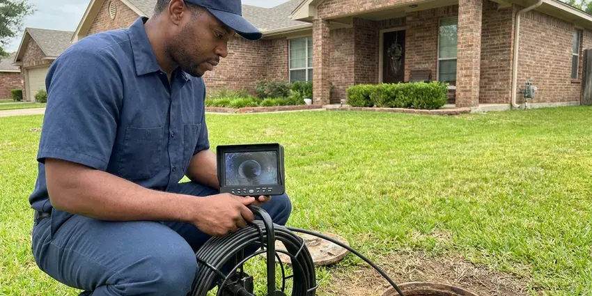

Rooter Services in Ketchikan, AK
CKN Plumbing offers complete rooter services in Ketchikan, AK, tackling everything from kitchen sink clogs to main sewer line blockages.
- Quick Drain Clearing
- Upfront Pricing
- Camera Checks on Request
- Expert Technicians
Clear Your Stubborn Clogs with Expert Rooter Services in Ketchikan, AK.
Contact us now for reliable rooter service and get your plumbing flowing smoothly again.
Professional Rooter Services for Ketchikan, AK Homes and Businesses
CKN Plumbing rooter technicians handle the toughest clogs in the area, including dense root balls, hardened grease and scale-encrusted cast iron. We choose the cutting head and cable size that fit your pipe so the line is cleared safely.
Our expertise includes:
- Root intrusion removal and prevention.
- Hydro-jetting for stubborn blockages.
- Root saw and spiral cutter heads for sewer lines

Additional Plumbing Maintenance Services in Ketchikan, AK
Our maintenance and specialty plumbing services in Ketchikan, AK catch small problems before they become emergencies.


Customers
Why Choose CKN Plumbing for Rooter Services in Ketchikan, AK?
Our experience with local Ketchikan conditions ensures that we address the root cause of your clogs, not just the symptoms, saving you time and money in the long run.
- Advanced Tools, We use modern rooter machines and hydro-jetting equipment to clear the toughest clogs quickly and without damage to your pipes.
- Correct Blades, We select cutters that match pipe size and material to safeguard older lines.
- 24/7 Availability, Emergencies don't wait, and neither do we. CKN Plumbing offers round-the-clock service for urgent drain and sewer blockages.
Citywide Coverage
CKN Plumbing is proud to offer quick, dependable rooter services to every neighborhood of Ketchikan. We understand that drain emergencies don't wait, so our local teams are dispatched quickly to address your plumbing issues no matter where you are in the area.
Experienced Team
Each CKN Plumbing technician performing rooter services brings years of hands-on experience to every job. They are experts in diagnosing complex drain problems and applying the right tools, whether it's a simple snake or a powerful hydro-jet, to get the job done right.
Safety-First Approach
Any cleanout caps or traps we remove are reinstalled to code and sealed against sewer gas. When we find damage that needs repair, we walk you through it and follow permit rules for the fix.
Trusted Certified Ketchikan Plumbing Services Professionals
At CKN Plumbing, we take pride in providing certified plumbing services throughout Ketchikan, AK. Backed by leading industry credentials, our experienced plumbers combine technical skill with genuine customer care. Whether it is repair, installation, or maintenance, we follow strict safety and quality standards to deliver lasting results you can trust.
Call Us Now PHCC Plumbing Contractor Recognition
PHCC Plumbing Contractor Recognition Better Business Bureau (BBB) Accreditation
Better Business Bureau (BBB) Accreditation Angi Certified Pro
Angi Certified Pro ISO 9001 Quality Management Certification
ISO 9001 Quality Management CertificationProfessional Rooter Services in Ketchikan, AK
Rooting vs. Pipe Repair in Ketchikan, AK
Rooting is the right fix when the pipe is sound but clogged. If roots keep returning quickly, or the cable meets broken pipe, a repair may save money long term. Rooting usually costs a few hundred dollars, while lining or replacement costs more but ends repeat clogs. A camera inspection shows which option fits best.

Residential Rooter Services in Ketchikan
CKN Plumbing specializes in clearing residential drain blockages, from kitchen sinks clogged with grease to bathroom drains full of hair and soap scum. We use several methods, including augers and hydro-jetting, to restore flow without damaging your home's pipes. Our technicians are trained to find the cause of recurring clogs and offer practical advice for your Ketchikan home.
Emergency Rooter Services in Ketchikan, AK
Plumbing emergencies, like a sewage backup, can happen at any time. CKN Plumbing offers 24/7 emergency rooter services in Ketchikan, AK to address urgent drain and sewer line blockages. Our rapid response team is equipped to quickly diagnose and clear severe clogs, minimizing damage and restoring comfort to your home or business, even in the middle of the night or on weekends.
Commercial Rooter Services in Ketchikan, AK
Businesses in Ketchikan, AK rely on clear drains for smooth operations. CKN Plumbing provides robust commercial rooter services for restaurants, retail spaces, and offices. We handle high-volume systems and industrial-grade clogs, often caused by food waste or foreign objects, minimizing downtime for your business. Regular maintenance plans are also available to head off future disruptions.
Floor Drain Rooter in Ketchikan
Basement and utility room floor drains in Ketchikan are prone to clogs from dirt, debris, and sediment. CKN Plumbing provides floor drain rooter services to keep these important drains open and working, preventing basement flooding. We use the appropriate equipment to clear blockages, often caused by laundry lint or sump pump discharge, so water flows properly to your main sewer line.
Tree Root Removal in Ketchikan
Tree roots are a leading culprit for sewer line blockages in Ketchikan, especially with the mature landscaping found in many older neighborhoods. Our rooter service includes purpose-built tools designed to cut through invasive roots without damaging your pipes. We can also recommend long-term solutions, such as pipe lining or replacement, to prevent future root intrusion.
Commercial Rooter Service in Ketchikan
Restaurants, apartment buildings, schools and offices put heavy loads on their drains. We root larger lines, kitchen waste lines and floor drains with commercial equipment. Scheduled maintenance plans keep lines open and cut down on emergency calls. We can work after hours to avoid bothering tenants or customers.

Hydro-Jetting Services in Ketchikan, AK
For the most stubborn clogs and heavy pipe buildup, CKN Plumbing offers hydro-jetting services in Ketchikan, AK. This technique uses high-pressure water to scour the inside of your pipes, removing grease, mineral deposits, and even tree roots. Homeowners on well water around Ketchikan should test every year or two, since water chemistry can shift and affect pipes and fixtures. Hydro-jetting cleans pipes more thoroughly than standard snaking, restoring them to near-original condition and preventing future clogs.
Rooter Services Near Me in Ketchikan, AK
Local technicians know which streets in Ketchikan have older clay sewers and heavy tree cover. That helps us bring the right equipment the first time. It also makes scheduling regular maintenance simple.
When you search for "rooter services near me" in Ketchikan, AK, CKN Plumbing is your go-to local expert. We know the plumbing infrastructure throughout the area, including how local soil and common tree species can affect sewer lines. Our nearby location means faster response times and technicians who understand your specific needs.
CKN Plumbing at a Glance
- Fully licensed plumbing team covering Ketchikan, AK
- 24/7 emergency service with same-day scheduling
- Clear written estimates, no hidden fees
- 4.9-star rated by 309+ Alaska customers
Ketchikan Map
Ketchikan Information
- Population
- 8,079
- Area codes
- Local
- Service area
- Ketchikan and communities within 40 miles
- Nearby
- Sitka, Juneau, Anchorage, Palmer
Effective rooter services matter in Ketchikan, AK because shifting soil and aging pipe can open cracks that let tree roots work their way in and cause stubborn blockages.
Expert Services
Trust our professionals for reliable CKN Plumbing solutions in Ketchikan, AK.
Our Specialized Plumbing Services in Ketchikan, AK
At CKN Plumbing, we provide a complete range of plumbing services across Ketchikan, AK. From leak detection to full system installations, our team ensures fast, precise, and affordable service for both residential and commercial properties. Explore our core services below:


How Our Rooter Services Process Works in Ketchikan, AK
We follow a step-by-step approach to diagnose, clear, and verify your plumbing system after every rooter service.
Request a Quote
Call (928) 470-9007 and tell us which drains are clogged and whether sewage is backing up. We give you a price range and an arrival time.
Root the Line
We access the drain through a cleanout or fixture and run the right cable and cutter. The line is cleared to full diameter and flow tested.
Report and Prevent
We show you what we removed and explain the cause. If needed, we recommend a camera inspection or maintenance schedule.
Frequently Asked Questions About Rooter Services in Ketchikan
The cost of rooter services in Ketchikan, AK can vary widely, typically ranging from $150 to $500 for standard drain snaking, depending on the severity and location of the clog. More complex issues like main sewer line blockages or hydro-jetting can range from $400 to $1,000 or more. We provide upfront pricing after a thorough diagnosis, so you know the cost before any work begins.
When performed by trained professionals like those at CKN Plumbing, rooter services are safe for your pipes. Our technicians are skilled in operating the equipment correctly to clear blockages without causing damage. However, if pipes are already weakened, such as corroded or cracked, some methods may worsen existing issues, which is why a camera inspection is often recommended first.
Slow drains in several fixtures, gurgling toilets and sewage odors are typical signs. Water backing up into a tub when you flush is another clue. Frequent clogs in the same line also suggest a deeper blockage.
No permit is required for routine rooting. Installing a new cleanout or repairing pipe may require one. We handle permits for any repair work.
To prevent future clogs, avoid pouring grease down drains, use drain screens in sinks and showers to catch hair and food particles, and throw away fibrous materials like coffee grounds and wipes in the trash. Consider periodic professional drain maintenance or hydro-jetting, especially for older homes or those with a history of recurring blockages.
Generally, simple rooter services to clear clogs do not require a permit in Ketchikan. However, if the service reveals a need for pipe repair or replacement, especially for main sewer lines, a plumbing permit may be needed. We will handle all necessary permitting if that situation arises.
We use top professional-grade equipment, including Spartan Tool and Ridgid rooter machines and hydro-jetters. These brands are known for their power and reliability, allowing us to tackle the toughest blockages without damaging your plumbing system.
Rooting is safe when done by trained technicians using the correct cable and blade. Badly cracked or collapsed pipe can be harmed by any cleaning method. We watch for warning signs and stop if the pipe shows signs of damage.
What People Are Saying About Our Plumbing Experts?

Daniel K.
A pipe burst at 11 pm and they actually answered. The plumber showed up within the hour, shut everything down, and had us back to normal the next morning. Could not ask for more.
Emergency Plumbing · Gateway, AK
Robert G.
The trenchless sewer replacement saved our front yard. They walked us through the camera inspection footage first so we knew exactly what we were paying for.
Sewer Line Replacement · Juneau, AK
Sofia M.
Two new toilets installed in one visit, no mess left behind, and the tech even adjusted a faucet he noticed was dripping. Fair pricing and really friendly.
Toilet Installation · Ketchikan, AK
Emily R.
I called CKN Plumbing for plumbing repair, and the technician was fast, polite, and thorough. They explained the problem clearly and fixed it the same day. I will definitely hire them again. Highly recommended!
Plumbing Repair · Juneau, AKLaura S.
I scheduled a water heater replacement, and the team made the process smooth and affordable. The new unit works perfectly, and they cleaned up after completing the job.
Water Heater Replacement · Anchorage, AK
Mark T.
When our office needed drain cleaning, CKN Plumbing provided quick, reliable service. The plumber arrived on time and made sure every drain flowed perfectly before leaving. Very satisfied.
Drain Cleaning · South Lakes, AK